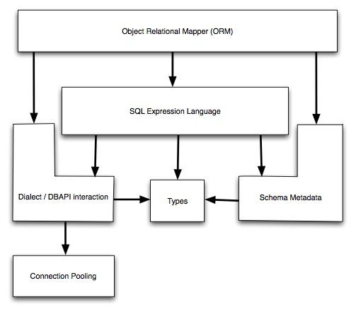

The SQLAlchemy SQL Toolkit and Object Relational Mapper is a comprehensive set of tools for working with databases and Python. It has several distinct areas of functionality which can be used individually or combined together. Its major components are illustrated below. The arrows represent the general dependencies of components:
Above, the two most significant front-facing portions of SQLAlchemy are the Object Relational Mapper and the SQL Expression Language. SQL Expressions can be used independently of the ORM. When using the ORM, the SQL Expression language remains part of the public facing API as it is used within object-relational configurations and queries.
The documentation is separated into three sections: SQLAlchemy ORM, SQLAlchemy Core, and Dialects.
In SQLAlchemy ORM, the Object Relational Mapper is introduced and fully described. New users should begin with the Object Relational Tutorial. If you want to work with higher-level SQL which is constructed automatically for you, as well as management of Python objects, proceed to this tutorial.
In SQLAlchemy Core, the breadth of SQLAlchemy’s SQL and database integration and description services are documented, the core of which is the SQL Expression language. The SQL Expression Language is a toolkit all its own, independent of the ORM package, which can be used to construct manipulable SQL expressions which can be programmatically constructed, modified, and executed, returning cursor-like result sets. In contrast to the ORM’s domain-centric mode of usage, the expression language provides a schema-centric usage paradigm. New users should begin here with SQL Expression Language Tutorial. SQLAlchemy engine, connection, and pooling services are also described in SQLAlchemy Core.
In Dialects, reference documentation for all provided database and DBAPI backends is provided.
Working code examples, mostly regarding the ORM, are included in the SQLAlchemy distribution. A description of all the included example applications is at Examples.
There is also a wide variety of examples involving both core SQLAlchemy constructs as well as the ORM on the wiki. See http://www.sqlalchemy.org/trac/wiki/UsageRecipes.
Installing SQLAlchemy from scratch is most easily achieved with setuptools, or alternatively pip. Assuming it’s installed, just run this from the command-line:
# easy_install SQLAlchemyOr with pip:
# pip install SQLAlchemyThis command will download the latest version of SQLAlchemy from the Python Cheese Shop and install it to your system.
Otherwise, you can install from the distribution using the setup.py script:
# python setup.py installSQLAlchemy is designed to operate with a DB-API implementation built for a particular database, and includes support for the most popular databases. The current list is at Supported Databases.
This documentation covers SQLAlchemy version 0.6. If you’re working on a system that already has SQLAlchemy installed, check the version from your Python prompt like this:
>>> import sqlalchemy
>>> sqlalchemy.__version__
0.6.0Notes on what’s changed from 0.5 to 0.6 is available on the SQLAlchemy wiki at 06Migration.